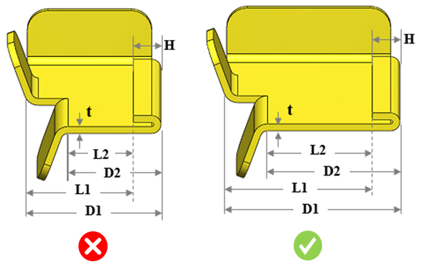

ヘムと曲げとの最小距離は、推奨値に従う必要があります。
適切な曲げ加工を行うために、ヘムと曲げの間には一定量（最小）の距離を確保する必要があります。距離が不足すると、工具とヘムが干渉し、損傷が発生する可能性があります。
ヘムと内側曲げとの最小距離は、板厚の2倍にリターンフランジの長さを加えた値以上とする必要があります。
ヘムと外側曲げとの最小距離は、板厚にリターンフランジの長さを加えた値以上とする必要があります。
DFMProはヘムのリターンフランジ長さを識別し、その長さに板厚の2倍を加算することで、ヘムと曲げとの距離を算出します。
ユーザーは、デフォルトで構成されている値を編集することができます。

ここでは、
t = 板厚
D1 = ヘムから内側曲げまでの最小距離
D2 = ヘムから外側曲げまでの距離
L1 = ヘム先端から内側曲げまでの距離
L2 = ヘム先端から外側曲げまでの距離
H = リターンフランジ長さ
注記:
対応しているヘムの種類は、オープン、クローズド、ティアドロップ、およびロールドヘムです。